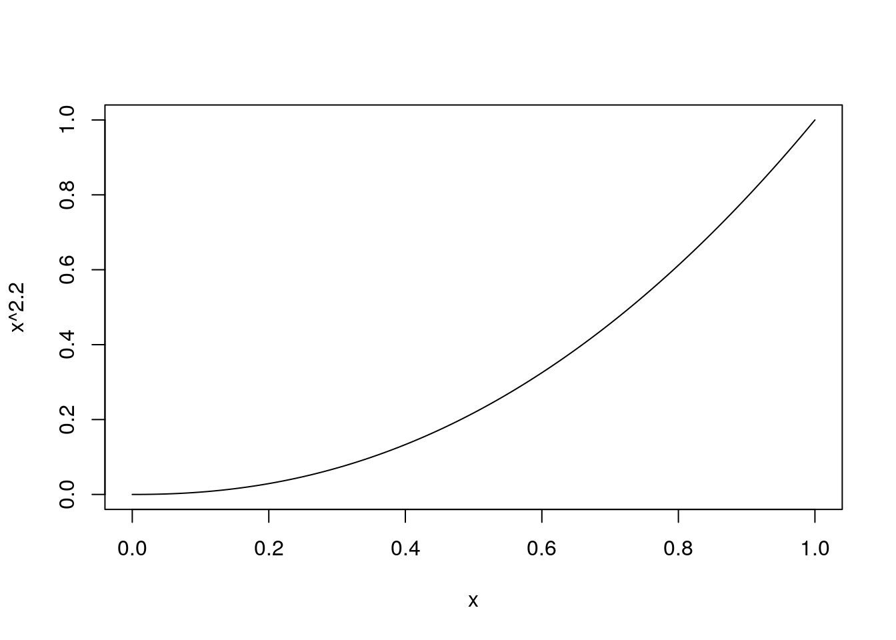

2 基本的な処理
2.1 準備
2.1.1 RAW画像の準備
RStudioのTerminalタブで以下を実行して、RAW画像ファイルをダウンロードします。
wget https://github.com/moizumi99/camera_raw_processing/raw/master/chart.jpg2.1.2 RAW画像の読み込み
必要なパッケージを読み込み
library(reticulate)
library(imager)reticulate::importでPythonのrawpyモジュールをインポート
rawpy <- import("rawpy")画像の読み込み
raw_file <- "chart.jpg"
raw <- rawpy$imread(raw_file)画像データをRの行列に読み込み
raw_array <- raw$raw_imageサイズの確認
raw_array %>% dim## [1] 2464 3280画像を表示
raw_array %>% t %>% as.cimg %>% plot2.2 簡易デモザイク処理
2.2.1 RAW画像の確認
拡大表示
raw_array %>% t %>% as.cimg %>%
imsub(x %inr% c(2641, 2700), y %inr% c(1341, 1400)) %>%
plot(interpolate = FALSE)RAW画像のBayer配列を確認
raw$raw_pattern## [,1] [,2]
## [1,] 2 3
## [2,] 1 0Bayer配列に対応するRGB画像を作リます。
raw_color <- array(0, c(dim(raw_array), 1, 3))
raw_color[c(T, F), c(T, F), 1, 3] <- raw_array[c(T, F), c(T, F)]
raw_color[c(T, F), c(F, T), 1, 2] <- raw_array[c(T, F), c(F, T)]
raw_color[c(F, T), c(T, F), 1, 2] <- raw_array[c(F, T), c(T, F)]
raw_color[c(F, T), c(F, T), 1, 1] <- raw_array[c(F, T), c(F, T)]画像の行と列を入れ替える補助関数
ta <- function(a) aperm(a, c(2, 1, 3, 4))表示
raw_color %>% ta %>% as.cimg %>% plot拡大表示
raw_color %>% ta %>% as.cimg %>%
imsub(x %inr% c(2641, 2700), y %inr% c(1341, 1400)) %>%
plot(interpolate = FALSE)2.2.2 簡易デモザイク処理
簡易デモザイク処理
simple_demosaic <- function(raw_array) {
dms_img <- array(0, c(dim(raw_array) / 2, 1, 3))
dms_img[,, 1, 3] <- raw_array[c(T, F), c(T, F)]
dms_img[,, 1, 2] <- (raw_array[c(T, F), c(F, T)] + raw_array[c(F, T), c(T, F)]) / 2
dms_img[,, 1, 1] <- raw_array[c(F, T), c(F, T)]
dms_img
}デモザイクして表示
raw_array %>% simple_demosaic %>% ta %>% as.cimg %>% plot
2.3 ホワイトバランス補正
2.3.1 ホワイトバランス補正処理
ホワイトバランスのゲインを確認
raw$camera_whitebalance## [1] 1.128 1.000 2.546 1.000ホワイトバランス補正処理
white_balance <- function(raw_array, wb_gain, raw_colors) {
norm <- wb_gain[2]
gain_matrix <- array(0, c(dim(raw_array)))
for (color in 0:3) {
gain_matrix[raw_colors == color] <- wb_gain[color + 1] / norm
}
raw_array * gain_matrix
}ホワイトバランス補正して簡易デモザイク
gain <- raw$camera_whitebalance
colors <- raw$raw_colors
dms_img <- white_balance(raw_array, gain, colors) %>% simple_demosaic画像を0と1の間でノーマライズする補助関数
normalize <- function(img) {
img <- img / 1024
img[img < 0] <- 0
img[img > 1] <- 1
img
}表示
dms_img %>% normalize %>% ta %>% as.cimg %>% plot
2.4 ブラックレベル補正
2.4.1 ブラックレベル補正処理
ブラックレベルを確認
blc <- raw$black_level_per_channelblc## [1] 66 66 66 66ブラックレベル補正処理
black_level_correction <- function(raw_array, blc, pattern) {
pattern <- pattern + 1
raw_array[c(T, F), c(T, F)] <- raw_array[c(T, F), c(T, F)] - blc[pattern[1, 1]]
raw_array[c(T, F), c(F, T)] <- raw_array[c(T, F), c(F, T)] - blc[pattern[1, 2]]
raw_array[c(F, T), c(T, F)] <- raw_array[c(F, T), c(T, F)] - blc[pattern[2, 1]]
raw_array[c(F, T), c(F, T)] <- raw_array[c(F, T), c(F, T)] - blc[pattern[2, 2]]
raw_array
}確認
dms_img <- raw_array %>%
black_level_correction(blc, raw$raw_pattern) %>%
white_balance(raw$camera_whitebalance, raw$raw_colors) %>%
simple_demosaic
dms_img %>% normalize %>% ta %>% as.cimg %>% plot2.5 ガンマ補正
2.5.1 ガンマ補正とは
ガンマカーブ
curve(x ^ 2.2, 0, 1)
ガンマ補正カーブ
curve(x ^ (1 / 2.2), 0, 1)2.5.2 ガンマ補正処理
ガンマ補正処理
gamma_correction <- function(input_img, gamma) {
input_img[input_img < 0] <- 0
input_img[input_img > 1] <- 1
input_img ^ (1 / gamma)
}確認
dms_img %>% normalize %>% gamma_correction(2.2) %>% ta %>% as.cimg %>% plot